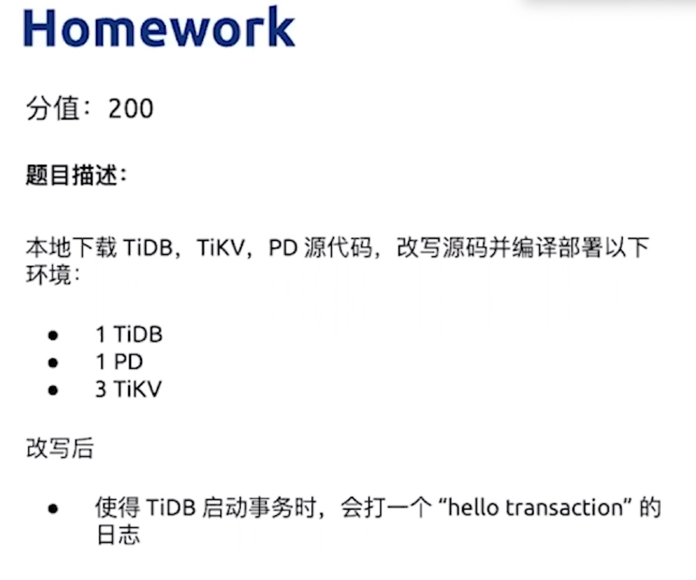
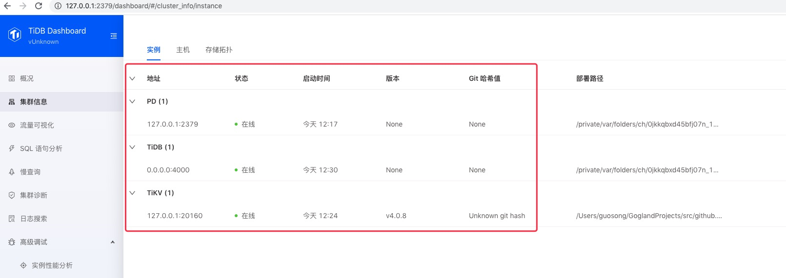

HomeWork说明

Mac 编译执行
1 | /Users/guosong/GoglandProjects/src/github.com/pingcap/tidb/tidb-server/main.go |
开启事务打印日志
代码修改位置
1 | func (e *SimpleExec) executeBegin(ctx context.Context, s *ast.BeginStmt) error { |
测试
1 | mysql> begin; |
tidb的日志
1 | [2020/12/17 17:00:30.475 +08:00] [INFO] [simple.go:556] ["hello transaction in executeBegin############ by Guosong"] |
默认提交的事务是不打的。
代码需要判断一下，否则Connection ID 0的线程一直打印：
1 | [2020/12/17 17:10:33.407 +08:00] [INFO] [simple.go:556] ["hello transaction in executeBegin############ by Guosong"] |
本地测试
